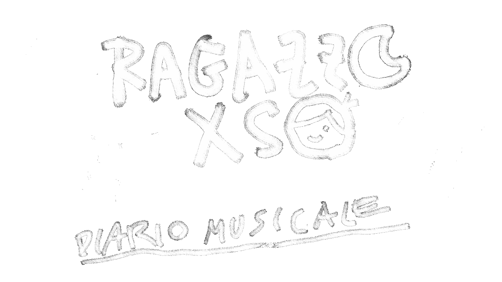
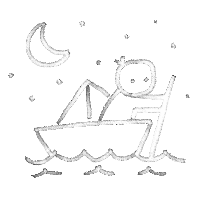

Nessun brano trovato

Nessun brano trovato

Mi ha traghettato a ritroso tra i fantasmi della mia adolescenza e poi oltre: fuori da me da quel mondo uterino fatto della sostanza dei sogni (i miei) per emergere sotto una tempesta con il tuo nome
Mi chiamo Matteo Francescato, sono nato a Torino nel 1993. Ragazzo xso è lo pseudonimo con cui ho pubblicato, tra il 2018 e il 2025, circa 60 canzoni, scritte e prodotte “in cameretta”. La raccolta di queste canzoni ha dato forma a un diario emotivo-psicologico che esplora il periodo della vita che separa la fine dell’adolescenza dall’età adulta. Questa fase è stata per me segnata da una conversione radicale nel modo di relazionarmi con me stesso e con le altre persone, guidata da una consapevolezza nuova:
Anche se è traumatico perdersi significa trovarti
Grazie a tutte le persone che mi hanno accompagnato in questo viaggio.